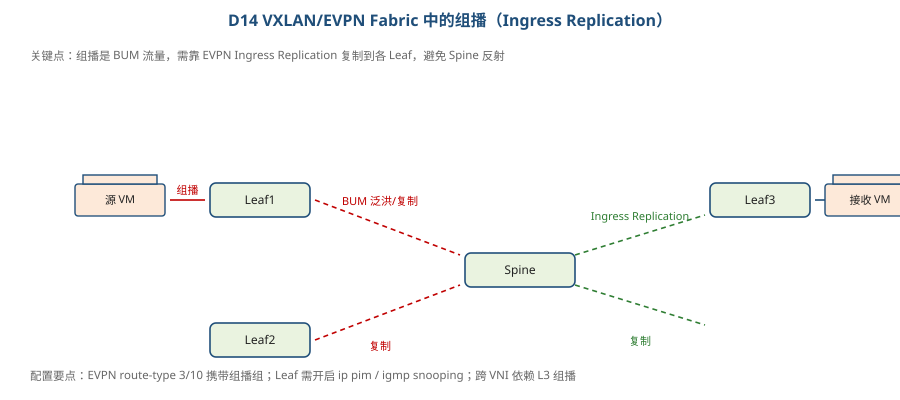

ch09 数据中心与云中的组播（VXLAN / EVPN / ACI / 公有云）
来源：Volume II Ch4（Multicast in Data Center Environments，P.225–P.253）、Ch5（Multicast Design Solutions，P.255–P.300） 配图：D14 VXLAN/EVPN 组播

学习目标
- 说清 VXLAN 环境中组播为什么是 BUM 流量、EVPN 如何用 Ingress Replication 解决复制问题；
- 掌握 VXLAN 组播的关键配置（EVPN route-type 3/10、Leaf 侧 IGMP/PIM、VNI 内 L2/L3 组播边界）；
- 理解 ACI Fabric 中 L2 IGMP Snooping 与 L3 组播的实现差异；
- 理解公有云无原生组播的替代方案（Service Reflection / 单播-组播转换）；
- 掌握数据中心组播的验证方法与常见故障。
1. 数据中心组播的现实
为什么 DC 需要组播：
- 服务网格/遥测（Prometheus、OTel 指标聚合）；
- 分布式缓存/配置分发（Nacos、Consul、etcd）；
- 视频流分发（直播、点播转推）；
- 金融行情/撮合系统内广播；
- 虚拟化迁移（VMware VMTN 依赖组播）。
为什么 DC 组播比企业网更难：
- Overlay 隧道：VXLAN 把二层包封装进 UDP/IP 组播（VTEP 发现用 239.1.1.1）或单播；
- BUM 流量：组播/广播/未知单播在 Spine-Leaf 中需要复制，Spine 若不做组播复制则必须由 Leaf 做 Ingress Replication；
- 多租户隔离：同一 VNI 内不同租户是否共享组播？跨 VNI 如何处理？
- 云上无组播：公有云 VPC 不支持组播。
2. VXLAN + EVPN 组播（Volume II Ch4）

2.1 VXLAN Flood-and-Learn vs EVPN
| 机制 | 组播泛洪方式 | 组播的代价 |
|---|---|---|
| VXLAN Flood-and-learn | 头端把 BUM 流量复制到所有 Spine → 各 Leaf → 所有 VTEP | 组播被复制到整个 Fabric，浪费巨大 |
| VXLAN + EVPN | BUM 流量通过 EVPN 路由（route-type 3：IM（Inclusive Multicast）ET）学习到"哪些 VTEP 需要该组"；数据面由 Ingress Replication 复制 | 只复制到有成员的 VTEP |
EVPN 与组播相关的 NLRI：
| Route Type | 名称 | 作用 |
|---|---|---|
| 3 | Inclusive Multicast Ethernet Tag (IMET) | 通告"哪些 VTEP 加入了某个广播域" → 组播 BUM 的成员发现 |
| 4 | Ethernet Segment (ES) | 多归段信息 |
| 10 | Multicast Ethernet Tag (MCAST ET) | 通告"某个 VNI 内哪些 VTEP 是某组播组的成员" → 精确的组播成员分发 |
route-type 10 是组播的关键：它是 EVPN 体系中唯一为"组播成员"设计的 NLRI，使得组播流不必像广播那样泛洪。
2.2 Ingress Replication（入口复制）
- 复制发生在入口 Leaf（收到组播的 Leaf）；
- 入口 Leaf 通过 EVPN 学到的成员列表，把封装后的组播复制到相关 Leaf；
- Spine 只需承载单播（只需 BGP EVPN + 单播路由）→ 核心无需组播能力。
2.3 关键配置要点
! Spine：只需 EVPN 控制面
router bgp 65001
address-family l2vpn evpn
neighbor 10.0.0.2 activate
! Leaf：EVPN + 组播
router bgp 65001
address-family l2vpn evpn
neighbor 10.0.0.1 activate
!
vlan 10
vni 10010
!
interface nve1
no ip address
source-interface Loopback0
host-reachability protocol bgp
member vni 10010 ingress-replication
!
interface Vlan10
vrf forwarding Tenant-A
ip pim sparse-mode
!
ip igmp snooping vlan 10
要点解释：
member vni 10010 ingress-replication：告诉 NVE 用入口复制（不依赖核心组播）；- VNI 内 L2 组播（同一 VNI 内主机互访）：靠 EVPN IMET/route-type 3 + 交换机内 IGMP Snooping；
- L3 组播（跨 VNI / 跨 VRF）：需要 PIM + EVPN 的多租户路由（Volume II Ch4 "Layer 3 Multicast Communication"）；
- VTEP 发现：传统用
239.1.1.1（组播）→ 在不支持组播的核心上需改为 BGP 控制平面发现。
2.4 三层组播在 VNI 内的边界（Volume II Ch4）
- 同一 VNI 内：组播被限制在 VNI 边界（相当于 VXLAN 天然形成 Admin Scope 边界）；
- 跨 VNI：需要 L3 组播（路由 + PIM），且要确认 VRF/租户隔离策略允许；
- 跨 VNI 泄漏是常见安全问题：租户 A 的组播流不应出现在租户 B 的 VNI 中。
3. ACI（ACI Fabric）中的组播（Volume II Ch4）
| 层次 | 机制 |
|---|---|
| L2 | Fabric 内部启用 IGMP Snooping（ACI 控制器统一下发），BD（Bridge Domain）内的组播按成员收敛 |
| L3 | ACI 在 VRF/BD 之间运行组播路由（由 APIC 统一下发 PIM），并支持 多租户组播（Ch5） |
多租户组播（ACI Multitenant Multicast, Volume II Ch5）：
- 每个租户在自己的 VRF 内有独立的组播空间；
- 跨租户共享媒体流需要 "Anycast-GR" / 组播出口/入口复制等控制器特性；
- ACI 的优势是策略统一：由 APIC 统一下发 IGMP Snooping 与组播策略，避免手工配置漂移。
价值判断：在 ACI 环境中，组播能力取决于 APIC 版本 + Fabric 配置模板，而不是逐台配置。做 DC 组播 POC 时必须让 ACI 团队参与。
4. 公有云与组播替代方案（Volume II Ch2）
现实：公有云 VPC 没有原生组播（AWS/Azure/GCP 均不提供用户可控的组播广播）。
替代思路（Volume II Ch2 Service Reflection 与三种转换用例）：
| 用例 | 含义 |
|---|---|
| Use Case 1：Multicast-to-Multicast | 源在云内仍是组播，云厂商把组播"反射"为可控的传输（由云厂商的组播基础设施承载） |
| Use Case 2：Unicast-to-Multicast | 源以单播进入云，云侧把它转成组播分发给订阅者 |
| Use Case 3：Multicast-to-Unicast | 云内是组播，出方向转换为单播（如点对点分发） |
企业侧常见工程做法：
| 方案 | 说明 |
|---|---|
| GRE/ IPsec 隧道 + 静态 mroute | 自建隧道把组播"拉"进云；必须为源和 RP 配静态 mroute（你的笔记中已明确指出这点） |
| 中继/网关设备 | 云上部署组播网关（接收单播或私有组播，转发为业务需要的形态） |
| 第三方组播云 | 云厂商的组播分发服务（如 CDN/直播厂商的组播转推） |
| 应用层组播 | 改用消息中间件（Kafka/NATS 等）替代网络组播 |
架构建议：不要为了"保留组播"而在云上自建复杂隧道，除非业务有硬性要求（如高频行情）。绝大多数场景应评估"应用层队列 + 单播分发"的总成本。
5. 数据中心组播验证（Volume II Ch6 "Verifying Multicast in VXLAN"）
! 二层成员
show ip igmp snooping groups vlan 10
show ip igmp groups vlan 10
! EVPN 侧
show bgp l2vpn evpn route-type 3
show bgp l2vpn evpn route-type 10
! 三层组播
show ip mroute vrf Tenant-A
show ip pim vrf Tenant-A interface
show ip pim vrf Tenant-A neighbor
! VTEP 隧道与复制
show nve vni 10010
show nve peers
show interface nve1 | include replication
6. 生产案例（6 例）
案例 9-1：VXLAN 中组播被全 Fabric 泛洪
现象：任意一台主机发组播，整个 Fabric 的 Spine 出口都有流量，带宽浪费严重。
定位：show bgp l2vpn evpn route-type 10 无条目；show bgp l2vpn evpn route-type 3 条目很多。
根因：只配置了 EVPN route-type 3（广播域成员），未启用 route-type 10（组播成员），BUM 走泛洪路径。
处置：确认 APIC/CLI 启用 EVPN 组播（route-type 10）；Leaf 侧 member vni <vni> ingress-replication。
复盘：DC 组播设计的第一个决策点就是"是否启用组播专用 NLRI"，否则组播退化为广播。
案例 9-2：Ingress Replication 未配置导致组播不通
现象：配置 EVPN 后组播完全不通；Spine 无组播能力。
定位：show nve vni 显示 member 无 ingress-replication；NVE 邻居正常。
根因：NVE 依赖核心组播复制，但核心不支持。
处置：Leaf 配置 member vni <vni> ingress-replication。
复盘：DC 组播复制点必须明确：要么核心组播，要么入口复制，二选一。
案例 9-3：跨 VNI 组播泄漏（多租户安全问题）
现象：租户 A 的组播流出现在租户 B 的抓包里。
定位：在租户 B 的 VNI 上抓到租户 A 的源 MAC 与组 IP；检查 show ip igmp snooping groups 与 VRF 策略。
根因：L2 组播跨 VNI 泛洪（VTEP 复制未按租户隔离），或 L3 组播在 VRF 间泄漏（Route Leaking / 缺失 filter）。
处置：启用 EVPN route-type 10 做精确成员分发；检查 L3 侧 VRF import/export 与组播过滤。
复盘：DC 组播的租户隔离优先级高于功能可用性；多租户环境建议默认禁止跨 VNI 组播。
案例 9-4：DC 内组播跨 Pod/跨可用区不通
现象：同可用区正常，跨 AZ 不通。
定位：跨 AZ 的 Spine 路径上组播包被丢；检查 show nve peers 与底层 underlay MTU。
根因：VXLAN 封装后报文超过 underlay MTU（尤其带 IPsec/overlay 加密时），组播不分片被丢。
处置：调整 underlay MTU（9000）或降低业务 MTU；加密场景设置 DF 位降包。
复盘：组播不能依赖分片（IP 分片对组播效率极低且易被丢），underlay MTU 必须预留。
案例 9-5：ACI 中组播被 Bridge Domain 隔离策略阻断
现象：BD 内主机收不到组播；APIC 无告警。
定位：APIC 中检查 BD 的 multicast 策略（IGMP snooping 开关、组播路由）。
根因：BD 模板未开启组播（IGMP Snooping 关闭），组播被泛洪或丢弃。
处置：在 BD/VRF 模板中启用组播特性并下发。
复盘：ACI 的组播是"模板级"能力，配置在 EPG/BD/VRF 模板上，不在单台交换机。
案例 9-6：云上组播改造（P2P 隧道）失败
现象：在云 VPC 内用 GRE 隧道把组播"拉"进来，组播不通但单播通。
定位：云侧隧道接口 up；show ip mroute 为空；show ip route <源> 正常。
根因：缺少静态 mroute（源在隧道外，RPF 查不到隧道接口），正如你笔记中"enable MC over non-MC networks（GRE、L2TPv3 – static mroute required for RP + MC source）"所述。
处置：在云侧设备为源与 RP 配置静态 mroute 指向隧道；注意静态 mroute 的环路风险。
复盘：跨非组播网络承载组播 = 隧道 + 静态 mroute + 环路分析，三件套一起上。
7. 自测清单
- 为什么 VXLAN 里的组播属于 BUM 流量？BUM 的三个字母各指什么？
- EVPN route-type 3 与 route-type 10 在组播中的分工？
- Ingress Replication 的复制点在哪里？对核心设备有什么要求？
- VXLAN 如何天然形成组播的 Admin Scope 边界？跨 VNI 组播意味着什么风险？
- ACI 中组播能力配置在哪一层（模板/设备）？
- 公有云缺组播的三种转换用例分别是什么方向？
- 为什么在云上用隧道承载组播必须配静态 mroute？
8. 延伸阅读
- Volume II Ch4（P.225–P.253）：VPC 组播、VXLAN/VTEP、EVPN、ACI、L2/L3 组播
- Volume II Ch5（P.255–P.300）：医疗、无线、多租户 DC、SDN/LISP、公用事业、市场行情、SP 组播
- Volume II Ch6（P.340–P.344）：Verifying Multicast in VXLAN
- 延伸：
RFC 7432（VXLAN）、RFC 7434（EVPN）、RFC 9012（EVPN 组播扩展）